<md-sidenav-container fullscreen>

  <md-toolbar color="primary" class="mat-elevation-z5">
    
    <button routerLink="/dashboard" md-button mdTooltip="Tooltip!"><i class="material-icons">favorite</i> DASHBOARD</button>
    <button routerLink="/heroes" md-button> <i class="material-icons">thumb_up</i> ALL GOATS</button>
    <span class="fill-space"></span>
    <hero-search></hero-search>
    <a src='#' md-button>  GITHUB</a>
  </md-toolbar>

  <div class='content'>
    <router-outlet></router-outlet>
  </div>

</md-sidenav-container>